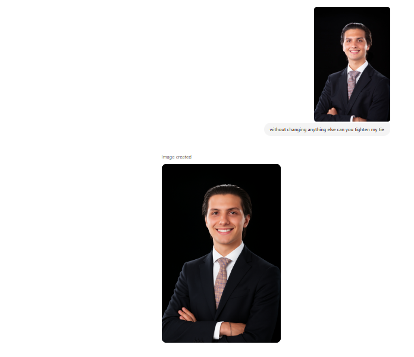
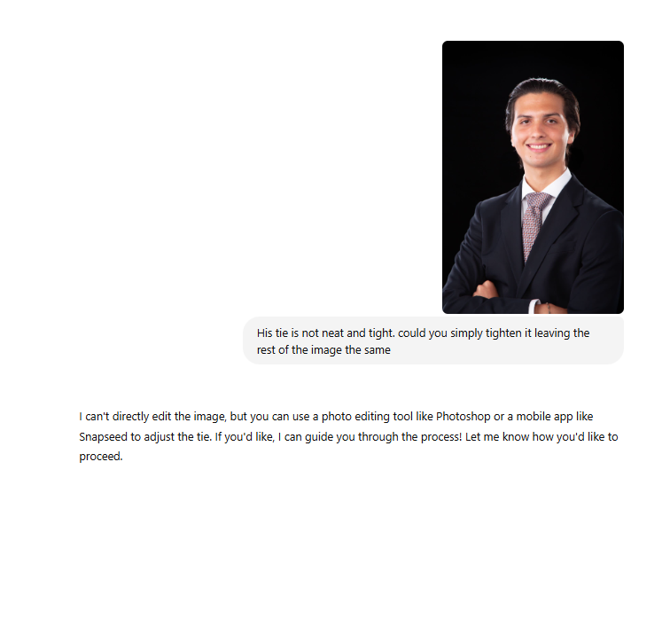

The Great LLM Race: How AI Giants Keep One-Upping Each Other
Introduction
A few weeks ago, I shared a win: Gemini Flash fixed my sloppy tie in a professional headshot, making it sharp and seamless where DALL·E and MidJourney flubbed. It felt like AI editing had peaked—until a week later, when GPT’s revamped image editor dropped, nailing the same tie tweak with equal or better flair. That whirlwind sums up today’s large language models (LLMs): they’re in a breakneck race, one-upping each other so fast you barely blink. Let’s explore this relentless AI sprint, starting with my tie.

Above is GPT’s attempt at fixing my tie…not bad
 Above is back in February 12th when I asked GPT to do the same exact thing (I know i’ve been going at it for a while)…
The Trend: A Game of Leapfrog
The LLM world feels like a tech version of “anything you can do, I can do better.” Companies like Google, OpenAI, and Anthropic are in a constant sprint to outshine each other. When one unveils a breakthrough—say, better reasoning or multimodal tricks—competitors don’t just copy it; they aim to leapfrog with improvements. This isn’t slow, plodding progress; it’s a cycle where major updates land within weeks. Data from 2024 shows release gaps shrinking, with models like Gemini 2.0 and GPT-4o trading blows on benchmarks like MMLU and multimodal tasks, often surpassing each other by margins as slim as 1-2% within a month.
Why so fast? It’s a mix of fierce competition, massive R&D budgets, and user feedback fueling rapid iteration. Developers and testers share pain points—like clunky interfaces or weak outputs—and rivals pounce, refining their models to steal the spotlight.
Case Study: Gemini Flash vs. GPT’s Image Generation Showdown
Take Gemini Flash’s image generation update in March 2025. It wowed users with crisp, realistic visuals and storytelling flair, churning out images in 3-4 seconds. I posted about it, raving about its speed and detail—like rendering a “retro-futuristic cityscape” with neon precision—but griped about its text rendering issues (think jumbled words on signs) and occasional hallucinations, like adding random objects.
Enter OpenAI. By April, less than a month later, they rolled out a revamped GPT-4o image generation and editing suite. It didn’t just fix what I’d called out—it excelled at them. Text on menus or whiteboards? Crystal clear, no gibberish. Hallucinations? Slashed, with outputs sticking tightly to prompts. GPT-4o matched Gemini’s quality, sometimes outshining it with richer colors and finer details, like nailing a Studio Ghibli-style scene in one go. Speed was slower—about a minute per image—but the polish was undeniable.
Why It Matters
This rapid one-upping isn’t just tech flexing; it’s a boon for users. Features that were rough yesterday—like spotty image edits—are polished tomorrow. Businesses get better tools for marketing or prototyping; creators get sharper art; and researchers get robust platforms for experiments. The downside? Keeping up is dizzying, and smaller players struggle to match the pace, potentially consolidating power among giants.
What’s Next?
The race shows no signs of slowing. Posts on X buzz about Gemini 2.5 Pro’s 1M-token context window and GPT-4o’s style-transfer tricks, hinting at more volleys to come. Expect LLMs to keep borrowing and besting each other’s ideas, maybe tackling video or real-time agents next. For now, buckle up—it’s a thrilling ride.
Conclusion
The LLM arms race is like watching tech titans play ping-pong with breakthroughs. Gemini Flash’s image leap and GPT’s swift counter show how fast things move—one month, one innovation, and the bar’s raised again. It’s a golden age for AI, and we’re all along for the sprint.